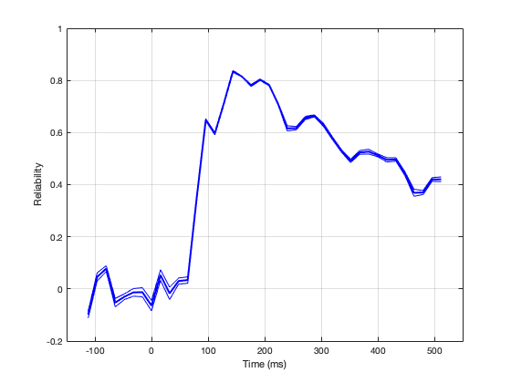

clear all; close all; clc
rng('shuffle');
n_perm = 10;
rnd_seed = 0;
load('S06.mat');
reliability_time = computeSpaceTimeReliability(X, labels72, n_perm, rnd_seed);
avg_space_reliability_time = squeeze(mean(reliability_time, 1));
close
plot(t, mean(avg_space_reliability_time, 2), 'b', 'linewidth', 2);
hold on; grid on
plot(t, mean(avg_space_reliability_time, 2)+std(avg_space_reliability_time, [], 2), 'b')
plot(t, mean(avg_space_reliability_time, 2)-std(avg_space_reliability_time, [], 2), 'b')
xlim([-150,550]);
xlabel('Time (ms)');
ylabel('Reliability');
Single-input rng specification: Setting generator to 'twister'.
Setting rng=(0, 'twister').
Timepoint 1
Timepoint 2
Timepoint 3
Timepoint 4
Timepoint 5
Timepoint 6
Timepoint 7
Timepoint 8
Timepoint 9
Timepoint 10
Timepoint 11
Timepoint 12
Timepoint 13
Timepoint 14
Timepoint 15
Timepoint 16
Timepoint 17
Timepoint 18
Timepoint 19
Timepoint 20
Timepoint 21
Timepoint 22
Timepoint 23
Timepoint 24
Timepoint 25
Timepoint 26
Timepoint 27
Timepoint 28
Timepoint 29
Timepoint 30
Timepoint 31
Timepoint 32
Timepoint 33
Timepoint 34
Timepoint 35
Timepoint 36
Timepoint 37
Timepoint 38
Timepoint 39
Timepoint 40
